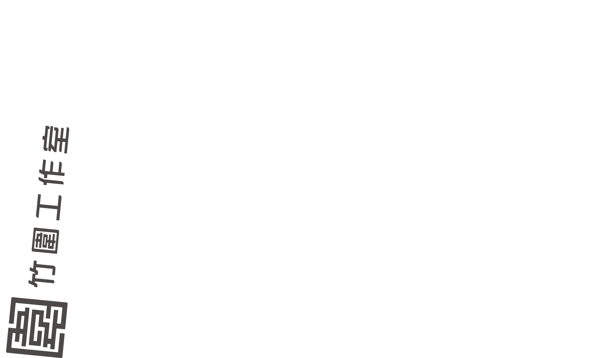
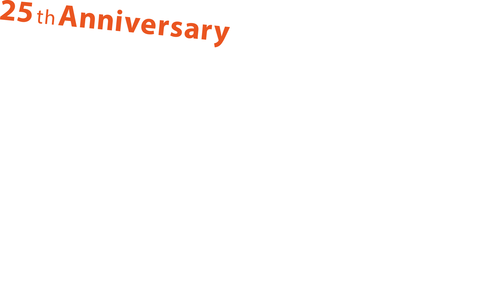
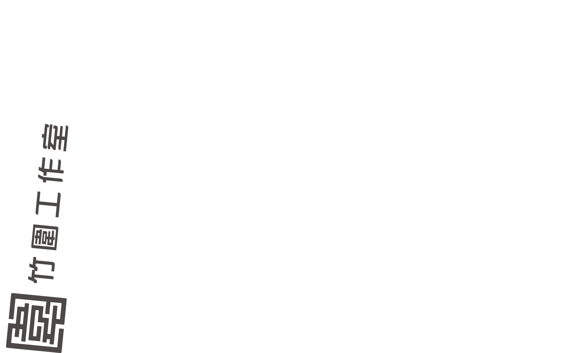
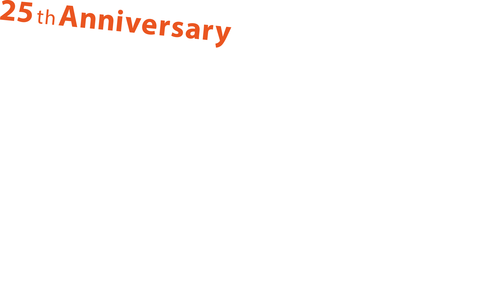
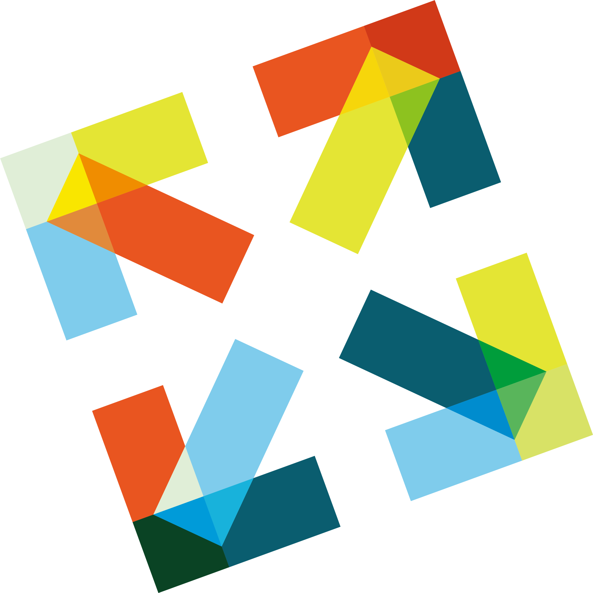
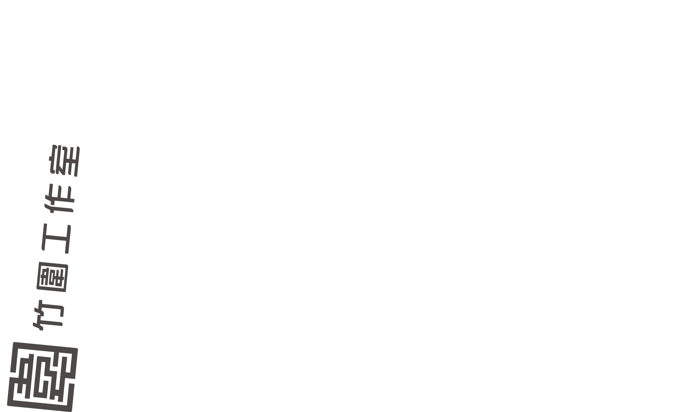
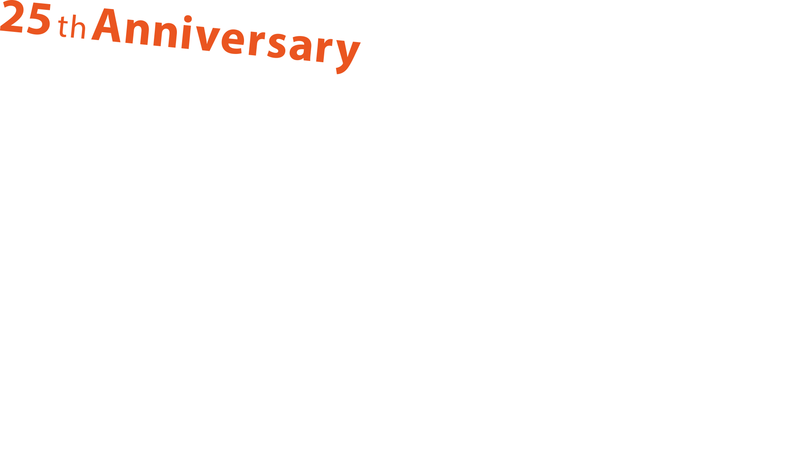
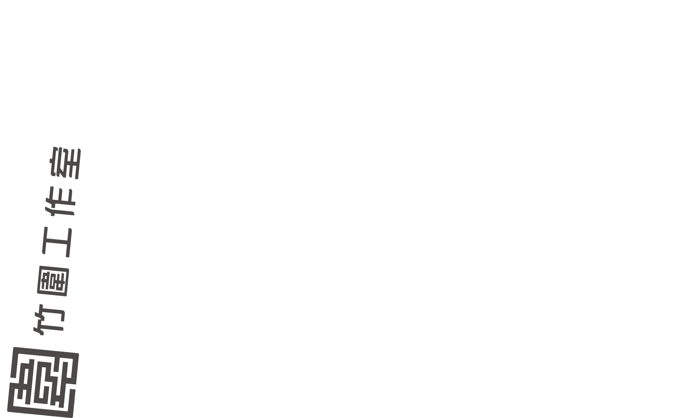
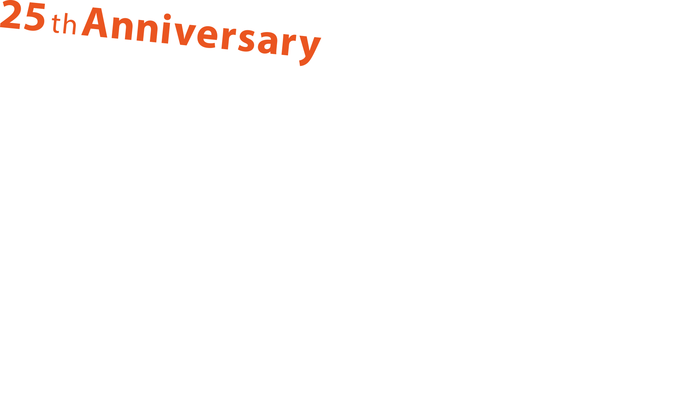

2020年，竹圍工作室迎向25歲！
從廢棄雞寮，搖身為改變發生的匯聚之地——1995年成立的竹圍工作室，從地理與性格上的邊緣性，孵育出包容開放精神，從另類勢力與前衛藝術催生者，成為陪伴創藝工作者的強大助力，同時連結國際網絡與在地行動、推動文化與社會環境的改變。
我們是跨領域、跨國界的文化藝術交流平台，也積極介入公共議題，推動各種創作、展演、實驗研究、社區發展、藝術教育等計畫與行動。我們實踐著草根行動力與開創精神，不斷探索藝文社群與社會共創價值的策略——深信：「藝術具備社會價值，並擁有觸發改變的能量。」
歡慶25歲同時，竹圍工作室要以自身為節點，回顧歷程，也集結各方能量，探索當前與未來的倡議與實踐方針。我們擷取與藝術交集的五大議題：「環境永續」、「社會實踐」、「人才養成」、「機構發展」、「國際交流」，將分別從研究回顧、案例採集、跨域交流工作坊、週年論壇、線上與實體出版等形式，迎向壯年！
這不只是竹圍工作室的重要標記，也是獨立藝術空間與藝術工作者，歷經1/4世紀歷程後，面向下個世代的發聲。
In Art We Trust
We Trust In Art
我們深信藝術的價值，且不止於藝術。
我們深信為改變而採取的共同行動，必能發揮影響力。
邀你一起，和我們引動蝴蝶效應。
In Art We Care：生態永續的行動
台北國際藝術村百里廳
Proin mattis nisl non est dapibus elementum. Etiam varius, purus sodales varius tempor, mauris nunc hendrerit velit, vitae interdum quam erat non lorem. Fusce luctus malesuada neque nec pretium. In sed turpis dui.
In Art We Connect：社會實踐的網絡
社會創新實驗中心
Proin mattis nisl non est dapibus elementum. Etiam varius, purus sodales varius tempor, mauris nunc hendrerit velit, vitae interdum quam erat non lorem. Fusce luctus malesuada neque nec pretium. In sed turpis dui.
In Art We Cultivate：創藝人才的養成
北師美術館
Proin mattis nisl non est dapibus elementum. Etiam varius, purus sodales varius tempor, mauris nunc hendrerit velit, vitae interdum quam erat non lorem. Fusce luctus malesuada neque nec pretium. In sed turpis dui.
In Art We Create：文化空間的發展
華山文化園區拱廳
Proin mattis nisl non est dapibus elementum. Etiam varius, purus sodales varius tempor, mauris nunc hendrerit velit, vitae interdum quam erat non lorem. Fusce luctus malesuada neque nec pretium. In sed turpis dui.
Proin mattis nisl non est dapibus elementum. Etiam varius, purus sodales varius tempor, mauris nunc hendrerit velit, vitae interdum quam erat non lorem. Fusce luctus malesuada neque nec pretium. In sed turpis dui.
In Art We Collaborate：國際交流的動能
華山文化園區拱廳
Proin mattis nisl non est dapibus elementum. Etiam varius, purus sodales varius tempor, mauris nunc hendrerit velit, vitae interdum quam erat non lorem. Fusce luctus malesuada neque nec pretium. In sed turpis dui.
In Art We Trust竹圍工作室25週年國際論壇＋25週年慶祝活動
華山烏梅劇院、竹圍工作室
Proin mattis nisl non est dapibus elementum. Etiam varius, purus sodales varius tempor, mauris nunc hendrerit velit, vitae interdum quam erat non lorem. Fusce luctus malesuada neque nec pretium. In sed turpis dui.